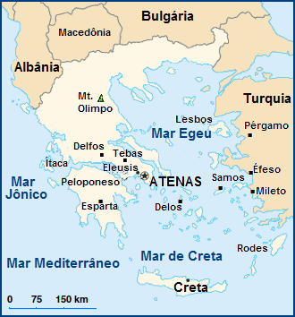

Aritmética A Origem de Tudo

A aritmética é o ramo mais básico e fundamental da matemática, responsável pelo estudo dos números e das operações elementares: adição, subtração, multiplicação e divisão.
Seu nome vem do grego arithmos, que significa “número”, indicando desde sua origem a relação direta com a ideia de quantificar e medir o mundo.
Mais do que apenas “fazer contas”, a aritmética estabelece as regras que permitem manipular quantidades de forma lógica e consistente, sendo a base sobre a qual toda a matemática foi construída.
A aritmética não surgiu como uma invenção formal, nem foi criada por uma única pessoa. Ela se desenvolveu ao longo de milhares de anos a partir de necessidades práticas da vida humana.

Antes da existência da escrita (aproximadamente antes de 3000 a.C.), seres humanos já precisavam:
Esse período inicial é conhecido como fase da contagem concreta, que remonta aproximadamente entre 20.000 a.C. e 5.000 a.C.
Um dos registros mais antigos desse tipo de pensamento é o Osso de Ishango, datado de cerca de 20.000 a.C., que apresenta marcas organizadas interpretadas como um sistema primitivo de contagem.
Com o surgimento das primeiras civilizações, como Egito e Babilônia (cerca de 3000 a.C. – 2000 a.C.), a aritmética começou a se estruturar:
Nesse momento, a aritmética ainda era prática, sem explicações teóricas.
A aritmética não possui um único criador. Ela é resultado da contribuição de várias civilizações e pensadores ao longo da história.
Entre os principais nomes:

Essas contribuições mostram que a aritmética é uma construção coletiva da humanidade.
A aritmética nasceu de problemas reais do cotidiano. Um dos exemplos mais clássicos e historicamente reconhecidos é o método usado por pastores para controlar seus rebanhos.
O exemplo das ovelhas e das pedras
Esse tipo de prática é associado ao período neolítico e às primeiras sociedades pastoris (aproximadamente entre 10.000 a.C. e 3.000 a.C.), quando a domesticação de animais se tornou comum em diferentes regiões do mundo, como Oriente Médio, África e Europa.
Pastores utilizavam um sistema simples:
para cada ovelha que saía → colocavam uma pedra
para cada ovelha que voltava → retiravam uma pedra
No final:
se sobrassem pedras → faltavam ovelhas
se faltassem pedras → havia ovelhas a mais
Esse método não surgiu em um único lugar específico. Ele aparece de forma independente em várias culturas, porque resolve um problema universal: controlar quantidades sem números escritos.
Esse sistema representa um conceito fundamental da aritmética chamado correspondência um-a-um, que começou a se difundir naturalmente entre sociedades antigas sempre que havia necessidade de contagem.
Esse exemplo mostra que:
Ao longo da história, a aritmética passou por várias transformações importantes:
Atualmente, a aritmética continua sendo essencial. Ela está presente em:
Todas as operações realizadas por computadores são baseadas em princípios aritméticos, especialmente a partir do século XX com o desenvolvimento da computação digital.
A aritmética é a base de toda a matemática moderna.
Desde o desenvolvimento da álgebra (a partir do século IX) até a computação (século XX), ela permanece essencial.
Sem aritmética, não existiriam:

A aritmética surgiu da necessidade humana de compreender e controlar quantidades, especialmente entre 20.000 a.C. e 3.000 a.C., antes mesmo da escrita.
Desde métodos simples, como o uso de pedras para contar ovelhas nas sociedades pastoris do período neolítico, até sistemas matemáticos complexos, ela evoluiu ao longo de milhares de anos.
Não foi criada por uma única pessoa, mas construída coletivamente por diversas civilizações em diferentes épocas.
Hoje, continua sendo a base de toda a matemática e uma ferramenta essencial para o funcionamento da sociedade moderna.